-
01
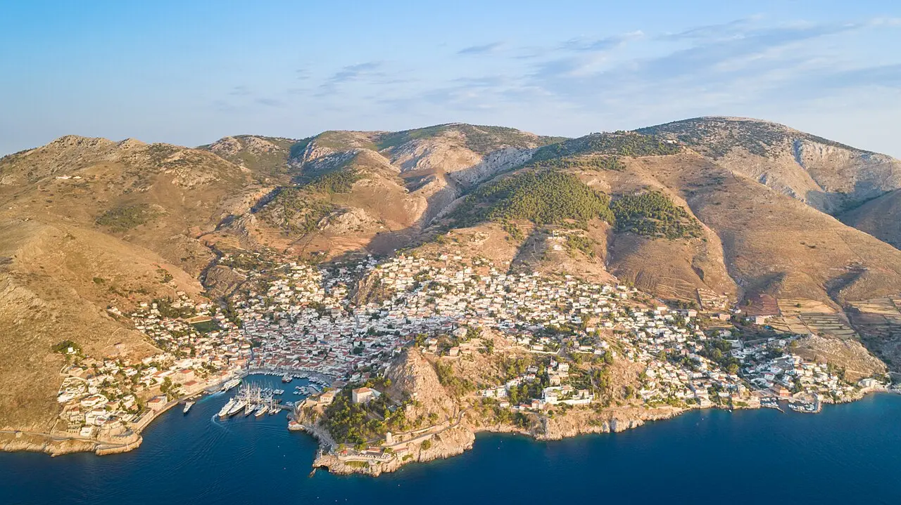
Hydra
Hydrofoil 07:30 → 18:30 · Piraeus
7–8 h ashore11–12 h door-to-door
€60–120all-in
PICK
No cars, no motorbikes, no scooters anywhere on the island; water taxis €8–15 to the swimming beaches, and up to 12 daily sailings if one boat sells out [24][8].
-
02
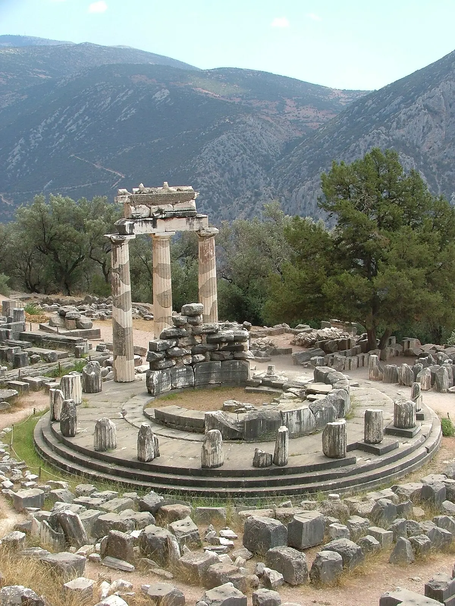
Delphi
Organised coach · 2.5 h each way
~4 h on site8–10 h door-to-door
€33–84incl. entry
PICK
The one classical day trip that justifies the drive. Public KTEL is four buses a day from Liosion, ~3 h each way, €33 return, €20 entry, site open 08:00–20:00 April–October [3] — the coach is faster and often cheaper once entry is counted [25].
-
03
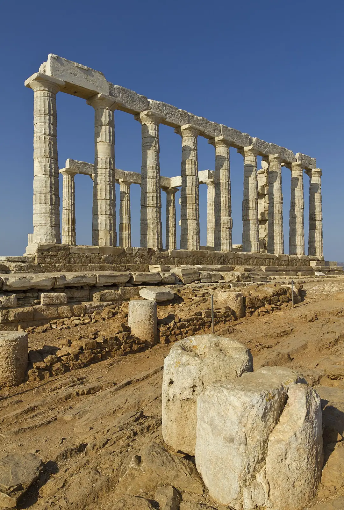
Cape Sounion
KTEL from Pedion tou Areos · or sunset tour
1.5–2 h on site5–6 h door-to-door
€33bus + entry
PICK
€6.30 each way, ~2 h by bus, €20 summer entry, open 09:30 to sunset [1]. Go for the 20:15–20:45 sunset: There is almost zero shade at the site. Zero.
[2]
-
04
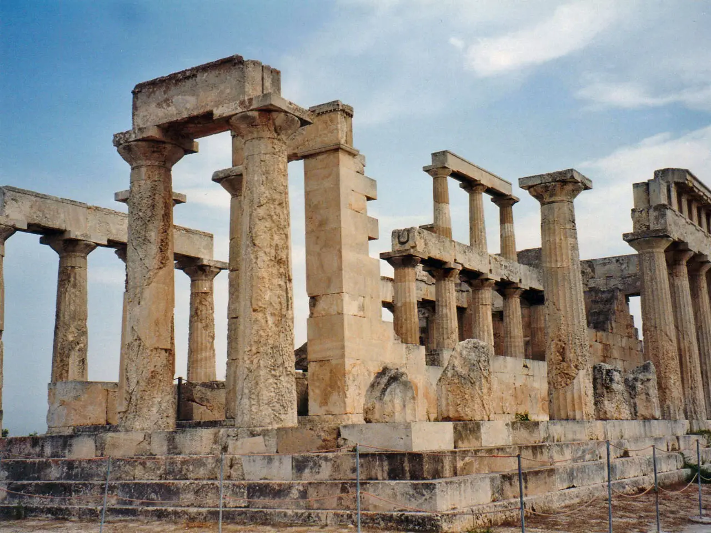
Aegina
Fast ferry · 40 min
5–6 h ashore7–9 h door-to-door
€25–40ferry return
SOLID
The budget substitute for Hydra: €11.50–19.50 each way, 9+ daily high-speed departures [9]. Island buses €1.80–2.00 reach the Temple of Aphaia on the Agia Marina line — check the departure, some services skip it [11].
-
05
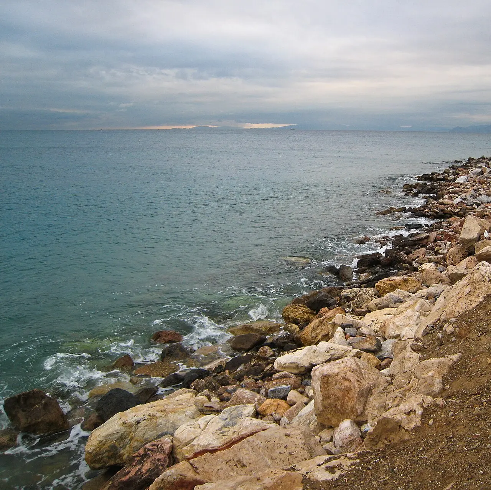
Athens Riviera beach
Tram T3 · 35–60 min
3–5 h on the sand4–7 h door-to-door
€2.40tram return
SOLID
The default when the forecast breaks 40 °C: Glyfada in 35–45 min, Voula in 50–60, on a €1.20 90-minute integrated ticket, with free public beaches at Edem, Kalamaki and parts of Glyfada [21].
-
06
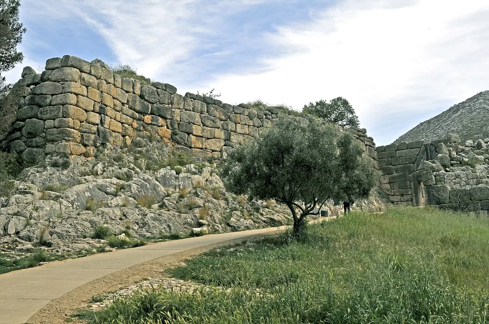
Nafplio + Mycenae + Epidaurus
Self-drive or full-day tour
~5 h across 3 stops10–12 h door-to-door
€85–130guided tour
SOLID
120 km, 2–2.5 h each way, €12 summer combined ticket at each site, both open 08:00–19:30 [13]. KTEL reaches Nafplio in ~2 h for €15–19 but not the two sites [14] — without a car or a tour this collapses to an afternoon in Nafplio.
-
07
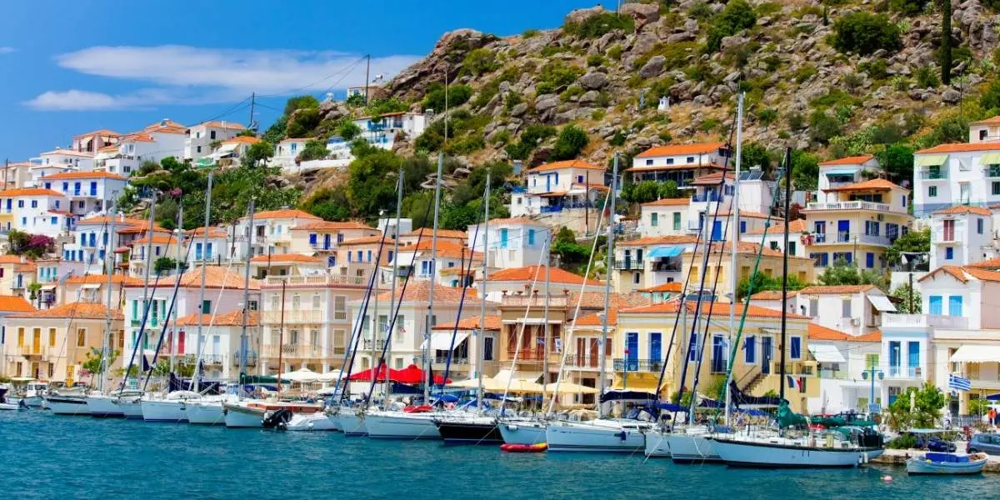
Poros
Ferry · 55 min – 2.5 h
~5 h ashore7–9 h door-to-door
€17+each way
BENCH
Up to 6 daily crossings [10]. A perfectly good island — but it is the one you take when the Hydra boat is sold out, not the one you choose first.
-
08
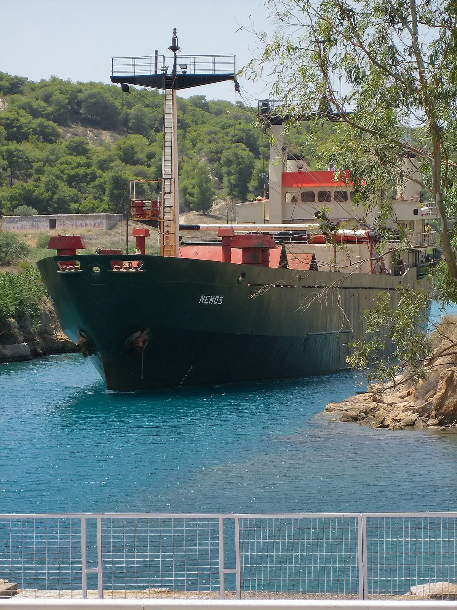
Ancient Corinth + the Canal
Proastiakos + taxi for the last 7 km
~3.5 h on site7–8 h door-to-door
~€35rail + taxi + entry
BENCH
1.5 h on the suburban rail to New Corinth, then a €10–12 taxi; €8 entry with the museum, open 08:00–20:00 in summer, and the best part — the fortress — has no shade at all [12]. Good with a rental car en route to the Peloponnese; mediocre as a standalone rail day.
-
09
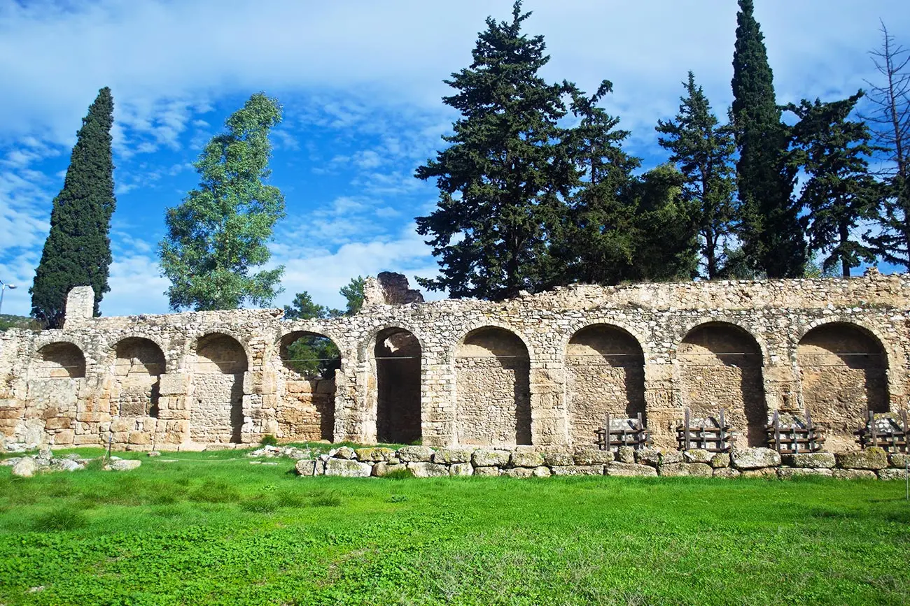
Kaisariani + Daphni
Bus 224 · metro · both inside Attica
~2.5 h on site3–5 h door-to-door
€9both entries
BENCH
The Byzantine pair: Kaisariani €3, 08:30–16:00, closed Tuesdays, bus 224 from Syntagma then a 40-minute uphill walk into cypress shade [15]; Daphni is UNESCO-listed, €6, 08:00–16:00 Tuesday–Sunday [16]. Best half-day filler on the board.
-
10
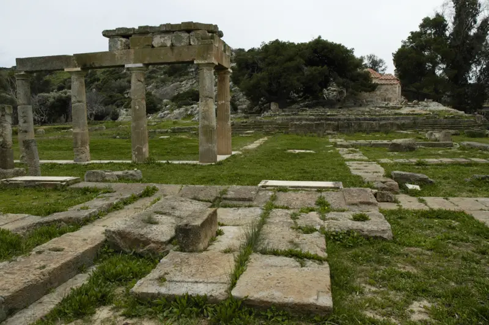
Vravrona (Brauron)
Car · 30 min
~2 h on site3–4 h door-to-door
€6site + museum
BENCH
Half an hour by car and genuinely pretty — but it closes at 15:30 and bus 304 leaves you 2 km short, so it is a car-only entry [18].
-
11
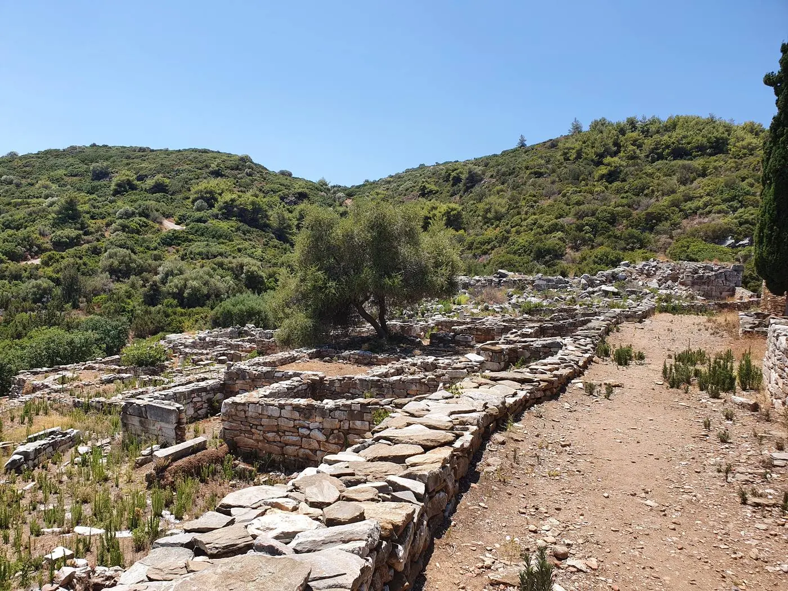
Marathon / Rhamnous
Car · KTEL Attikis + €15 taxi
~2 h on site5–7 h door-to-door
€5–11entries
SKIP
Rhamnous is €5, closed Tuesdays, 08:30–15:30, and needs a KTEL to Marathon plus a €15 taxi for the last 15 km [17]. At Marathon itself, per visitors, you have the hill (tumulus)… and nothing more
[19]. Specialists only.
-
12
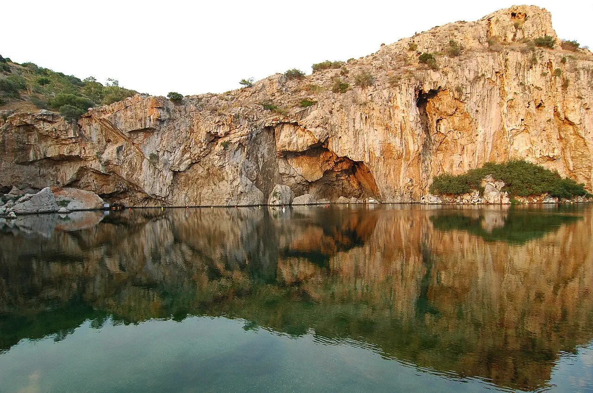
Tram T3 → bus 122 at Asklipieio Voulas
~3.5 h at the lake4–6 h door-to-door
€17–19+ €70–90 sunbeds
SKIP
€17 weekdays, €19 weekends, 08:00–19:00, and a weekend sunbed set for two adds €70–90 [20] — after a tram plus a bus transfer [21]. The same tram line drops you at a free beach for €1.20.
-
13
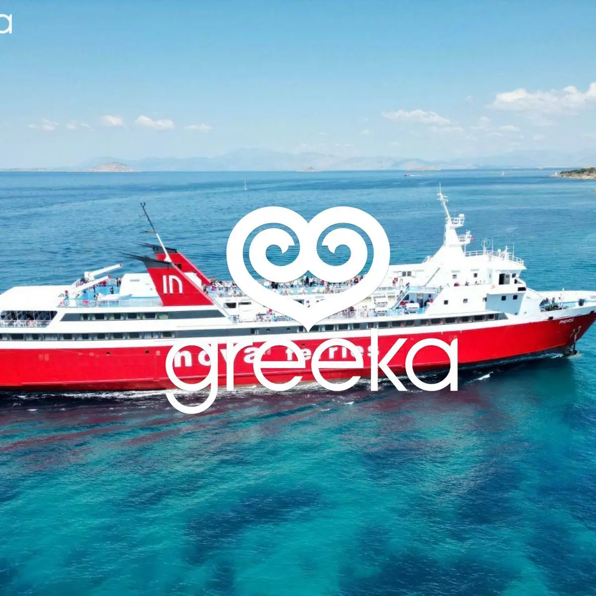
One-day three-island cruise
Piraeus coach transfer + boat · 07:00–18:00
1 h + 1.5 h + 2 h ashore~11 h door-to-door
€110–130per person
TRAP
The only bar on this board whose on-site block is not one block: Poros 1 h, Hydra 1.5 h, Aegina 2 h [6].
-
14
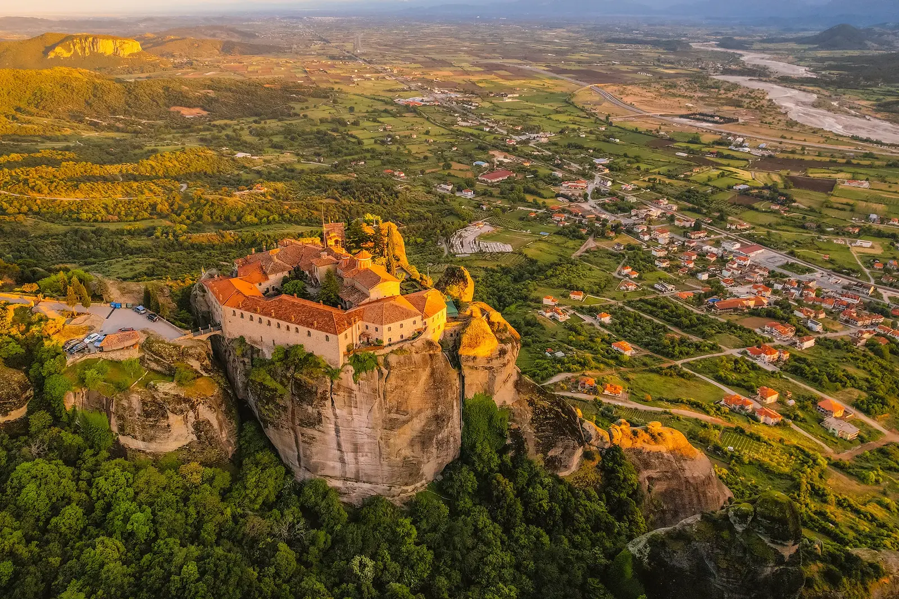
Meteora in a day
Express coach · 4 h 30 each way
~3 h at the monasteries14 h+ door-to-door
€54+each way
TRAP
Nine hours of transit before you see anything, against monasteries that shut at 15:00–16:00 [5]. Meteora is an overnight, not a day trip.
Door-to-door hours assume a central-Athens start and are computed from the cited leg times; costs are per person excluding food. Full working in the default view · Atlas